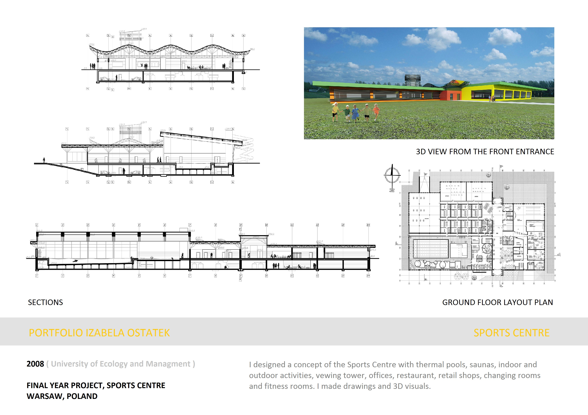

Final year architectural thesis at the University of Ecology and Management, Warsaw. The brief was to design a public sports and wellness centre in the Wesoła district — an area with significant geothermal potential — that could serve the local community while demonstrating low-energy building principles.
The scheme centres on a fully resolved 5,423 m² building containing an indoor swimming pool hall, thermal pools fed by geothermal water, saunas, fitness rooms, changing facilities, a restaurant, retail units, and a viewing tower. The undulating roof structure — expressed in the sections as a continuous wave — reduces structural depth while maximising natural light over the pool hall below.
The site plan distributes the building within a generous landscape: 31,457 m² of biologically active green space, outdoor terraces, a children's playground, grill areas, and sports pitches. Underground parking is integrated beneath the building, accessed from a dedicated entrance on Ul. Wodociągowa, keeping the surface free for pedestrians and planting. The project was developed to full technical resolution — site plan, floor plans, basement plan, four elevations, and three sections at 1:200.
